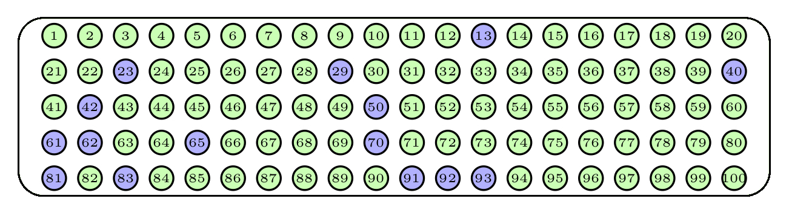
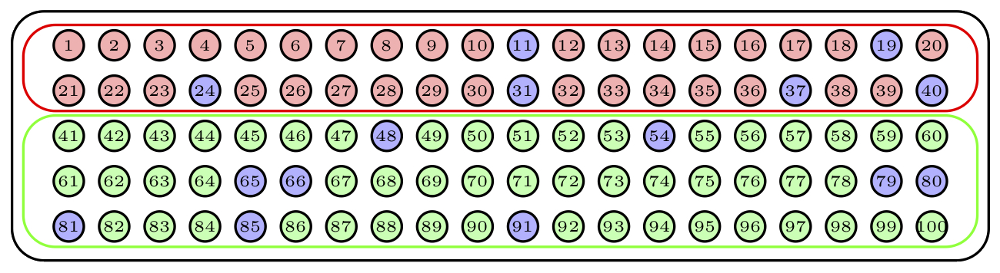
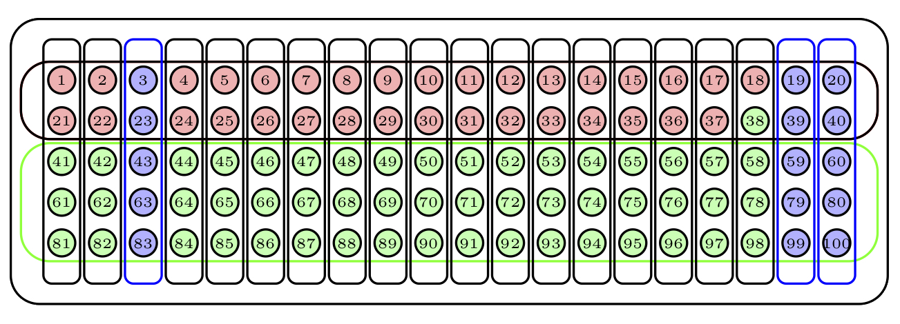

Sesión VII: Introducción al diseño muestral complejo
El objetivo de aprendizaje de esta unidad, según nuestro plan de curso, es:
“Aplicar técnicas de ponderación y diseño muestral complejo para análisis válidos en encuestas.”
Al final de esta sesión, seremos capaces de:
survey y srvyr en R.La mayoría de las funciones que hemos usado hasta ahora (mean(), lm(), count()) asumen que nuestros datos provienen de un Muestreo Aleatorio Simple (MAS).
MAS: Cada individuo en la población tiene exactamente la misma probabilidad de ser seleccionado para la muestra.

Las encuestas reales (ELSOC, CASEN, CEP) casi nunca son MAS. Son Muestreos Complejos.
¿Por qué?
Eficiencia de costos: Es más barato entrevistar a 10 personas en 10 manzanas (conglomerados) que a 100 personas repartidas aleatoriamente por todo Santiago.
Precisión estadística: Queremos asegurar la representación de grupos pequeños (ej. inmigrantes, jóvenes rurales). Para esto, los “sobre-muestreamos” intencionalmente (estratificación).
Si analizamos datos de una encuesta compleja como si fuera MAS:
Estimaciones Puntuales (Medias, %): Serán incorrectas (sesgadas). Si sobre-muestreamos a jóvenes rurales, la media de edad de la muestra será más baja que la de la población, a menos que “corrijamos” ese sobre-muestreo.
Errores Estándar (Intervalos de Confianza): Serán incorrectos (generalmente, subestimados). El análisis no considerará que las personas de un mismo conglomerado (ej. un colegio, una manzana) tienden a parecerse entre sí.
Si usamos dplyr::summarise(mean(ingreso)) en datos CASEN:
El promedio de ingreso que obtendremos estará estadísticamente incorrecto y nuestros intervalos de confianza mentirán sobre la precisión.
Esto no es un problema menor. Es la diferencia entre un análisis válido desde el punto de vista a la inferencia estadística.
Generalmente tiene tres componentes clave que debemos informar a R:
Dividir la población en subgrupos “homogeneos” (estratos) ANTES del muestreo. Luego, se saca una muestra de CADA estrato.
territorio (urbano/rural). Aseguramos tener gente ambos estratos.
Muestrear grupos “naturales” e internamente “heterogéneos” de individuos (conglomerados) en una primera etapa, para luego muestrear individuos dentro de esos grupos.

Es la consecuencia directa de tener probabilidades de selección desiguales.
Esta es la variable que usualmente encontramos en las bases de datos (ej. fexp, pw, peso). Es el producto de varios ajustes.
factor_expansion = 400.5 significa que esa persona representa a 400.5 individuos en la población objetivo total.srvyr en el argumento weights=. Al sumarla, deberíamos obtener el tamaño total de la población \(N\).survey / srvyrPara manejar estos diseños, no usamos dplyr directamente. Usamos paquetes especializados.
survey (El Clásico): Creado por Thomas Lumley. Es el motor estándar de oro para encuestas en R. Su sintaxis no es “tidyverse”.
svydesign(), svymean(), svyglm().srvyr (El Moderno): Creado por Greg Martin. Es un “envoltorio” (wrapper) que traduce la sintaxis tidyverse (|> y verbos dplyr) al lenguaje de survey.
srvyrEl análisis de encuestas complejas siempre sigue dos pasos:
Paso 1: Declarar el Diseño
as_survey().Paso 2: Analizar
srvyr que respetan el diseño que declaramos.survey_mean(), survey_total(), survey_quantile(), svytable().group_by() y summarise() como ya sabemos.mean, lm) en datos de encuestas complejas produce resultados inválidos.srvyr por su sintaxis amigable con el tidyverse.as_survey(): Declarar el diseñosummarise() + survey_mean(), survey_total(), survey_prop().group_by() funciona como siempre.En la próxima sesión de la Unidad 2, continuaremos con otro tipo de dato fundamental en sociología:
Análisis de datos espaciales
Evaluación 2
Evaluación 3